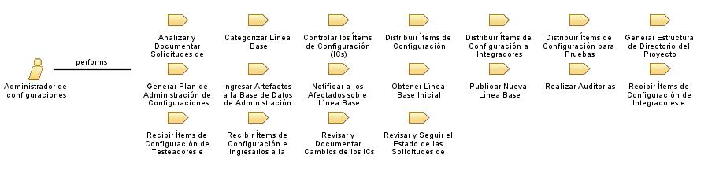

| Role: Administrador de configuraciones |
 |
|
Relationships
 |
||
| Modifies |
|
|
|---|---|---|
Main Description
| Planifica y realiza las actividades de administración de configuración. Controla y autoriza todos los cambios en las líneas base. La administración del repositorio de líneas base es revisada y aprobada por este rol antes de tomar cualquier acción. |